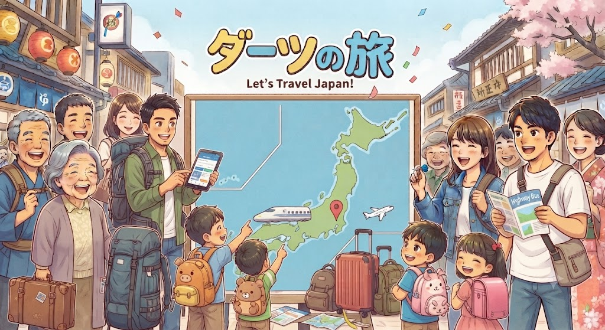
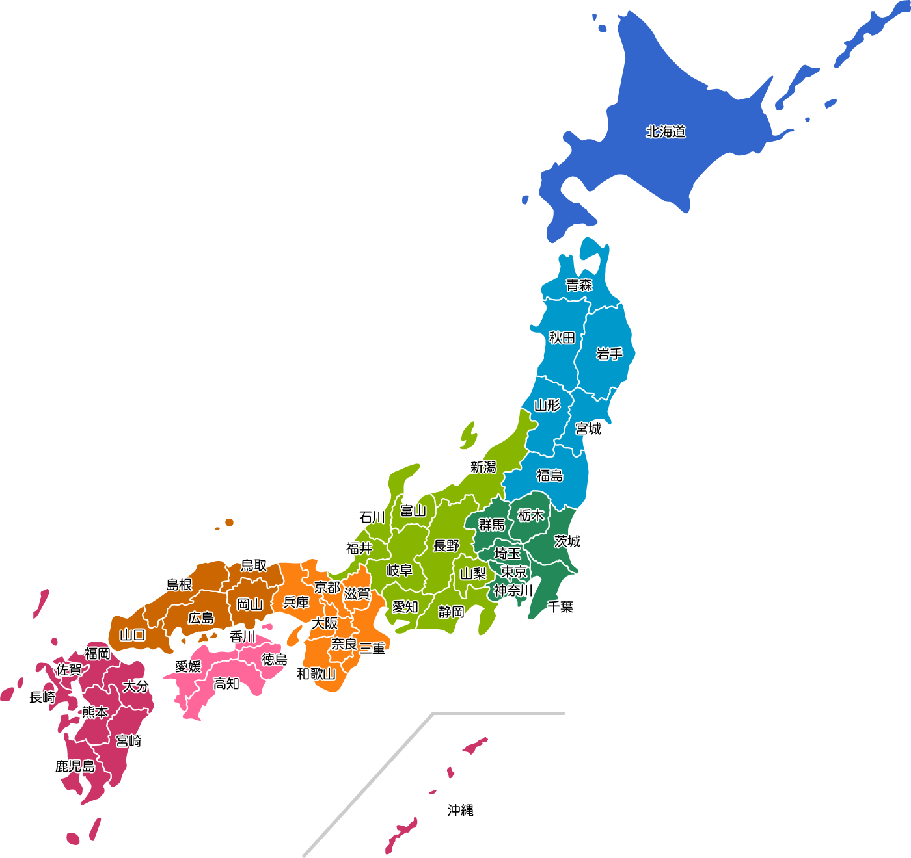

🎯 やってみる
🎯
ダーツを投げて、当たったところに行くよ！
（タップで閉じる）
🎯💫
どこだろう！？
🗾 AI探訪ダーツ
🔊 音ON
📜 履歴
00:00
🤖
🎯 投げ方
ピンポイント
ランダム
チャレンジ
🔄 投げ直し
🗺️ マップ
🚀 ここに行く
🤖 ここに行ってみませんか？（AIが今日の話題から提案）

📍
🎯 投げる！
角度
強さ
💪 強いほど北へ！ 左＝西 / 右＝東。
着弾地は…お楽しみ！🎁
都道府県を特定中...
詳しい住所を取得しています...
🖼️ この場所の景色をGoogle画像検索で見る
🏠 ダーツを投げ直す
×
🎒 旅の履歴
🗑️ 履歴をすべて消す
🗾
0
🏅
0
❓
🎉
×
🗾 全国制覇マップ
0 / 47 県 制覇
0%
×
🏅 実績・称号
×
❓ 都道府県クイズ
スコア: 0 問題: 0
「ここはどこ？」ボタンで出題スタート！
出題された都道府県を、地図上でピンポイントに狙って刺してください🎯
近いほど高得点！
🎯 出題スタート
※クイズ中は「ピンポイント」で地図をタップ。モーダルは自動で閉じます。
×
🎉 パーティ / 妄想旅行
👥 遊ぶ人数と名前
2人
3人
4人
🎲 遊び方
🎯 お題に近づけ対戦
🧳 妄想旅行（昼食→夕食→宿）
📌 お題（対戦モード時）
▶️ スタート
全員が順番に1投ずつ。対戦はお題に一番近い人が勝ち！
妄想旅行は昼食・夕食・宿の3か所をみんなで決めます🍚🌃🛏️
次へ ▶️
🏁 終了して結果を見る
×
📱
ホーム画面に追加
すると、アプリのようにサッと遊べます！
×